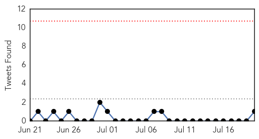

30 Day Trends
Web: 0 alerts, 0 warnings
Twitter: 0 alerts, 0 warnings
Top Articles:
- 0.994
- The World On Arirang
- 0.992
- S. Korea's MERS cases, death toll remain flat
- 0.988
- KBS World Radio
- 0.979
- (2nd LD) S. Korea's MERS cases, death toll remain flat
- 0.976
- (2nd LD) S. Korea's MERS cases, death toll remain flat
- 0.975
- 'Mers epicentre' hospital in Seoul resumes normal ops, East Asia News & Top Stories
- 0.975
- Normality returns to hospital at centre of Korea MERS crisis
- 0.973
- Normality returns to hospital at centre of South Korea Mers crisis, East Asia News & Top Stories
- 0.973
- Normality returns to Samsung hospital at centre of South Korea MERS crisis
- 0.956
- Tularemia Concerns Raised
- 0.949
- After MERS, Korea to beef up health expertise, news, Health News, AsiaOne YourHealth
- 0.934
- Fourth Case Of E. Coli Has Been Confirmed
- 0.929
- Lyme disease spreading, prompting Utah victim to call for more awareness
- 0.917
- (MERS virus) Samsung hospital resumes services
- 0.917
- Chicago Tribune
- 0.917
- Chicago Tribune
- 0.917
- Chicago Tribune
- 0.917
- Chicago Tribune
- 0.917
- Chicago Tribune
- 0.917
- Chicago Tribune
- 0.862
- Lyme Disease Is Growing, Spreading To New Areas
- 0.856
- A&E blood test patients to be checked for HIV
- 0.806
- Lyme Disease Is Growing, Spreading To New Areas
- 0.801
- How can a nurse practitioner help me?
- 0.791
- Economic impact likely from 2015 vesicular stomatitis outbreak in US
- 0.785
- Dog flu arrives in North Carolina
- 0.780
- Studies Confirm That Early Drugs Halt AIDS, Prevent Spread
- 0.709
- Acute kidney injury: prevention and recognition
- 0.701
- High Tea salmonella outbreak at Melbourne’s Langham Hotel hits 34 people
- 0.700
- Salmonella outbreak hits prestigious hotel
- 0.687
- Salmonella outbreak linked to Melbourne hotel's high tea
- 0.655
- I expect people who had contact with anthrax-infected meat to test negative for it: Bulgaria official
- 0.652
- KBS World Radio
- 0.649
- Sorry, deze pagina kon niet gevonden worden.
- 0.649
- Sorry, deze pagina kon niet gevonden worden.
- 0.648
- Restructured Interventions Halt Transmission of HIV
- 0.632
- Confirmed Case of Hantavirus in Texas Pandhandle
- 0.608
- Ukraine: UNICEF appeals for help to restore damaged water facilities for 1.3 million people
- 0.596
- Space for Global Health Activities
- 0.596
- Largest Trial for AIDS Treatment Planned After French Teen’s Remission
- 0.553
- Greece's Costly Health Care Craze
- 0.541
- Drinking Unsafe Water In India: What Next?
- 0.541
- Bat exposes one person to rabies in York County
- 0.513
- Chicks Shipped Off to Escape Bird Flu
Top Tweets:
- 0.502
- There is no cure for HIV infection. However effective treatment with antiretroviral (ARV) drugs can control the virus
Web/News Articles

Tweets
Article Locations

Article Confidences